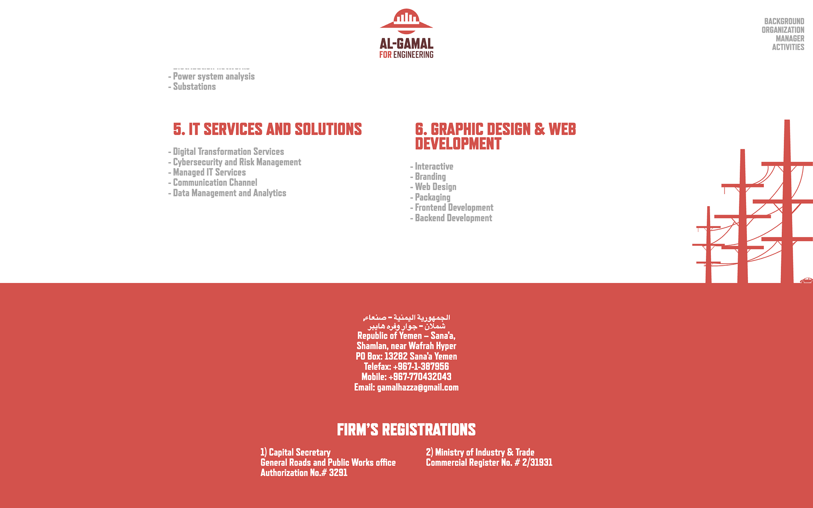

Al-Gamal - 2023
Branding and Website Build


Al-Gamal for Engineering was established in 1999 in Sana'a, Yemen. I was recently tasked with designing a rebrand for the business as well as building a frontend website for it. For the visual language, I took inspiration from Yemen's architectural style and tried to marry the ornate, arc-heavy look of buildings in the Old City of Sana'a with a more minimalist, modern aesthetic.
After finishing the style guide for this project, and designing the logo, business cards, promotional brochures, and website, I began the build. I mirrored the minimal-modern approach to the design on the engineering side as well. I wanted to maintain a clean codebase and provide easy scalability for the future, so I used a simple though modern architecture of Typescript and Sass, both of which compiled separately without a bundler given this was a smaller single-page website.
